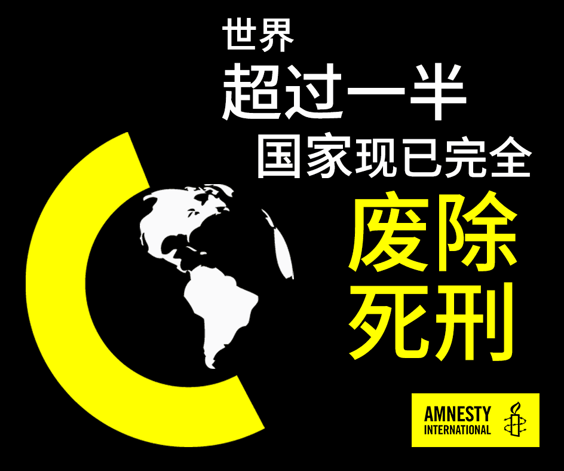

文/国际特赦组织资深研究倡议和政策主任克莱尔·阿尔格（Clare Algar）
沙特阿拉伯的阿布杜卡里·哈瓦伊（Abdulkareem al-Hawaj）被指于2012年16岁的时候在该国什叶派占多数的东部省参加了反政府抗议活动。两年后，这名少年被拘捕，并被控参与抗议活动相关的罪行。
据报，阿布杜卡里在头5个月中被单独关押，并在残酷的审问过程中遭到殴打、恐吓和以家人的性命相威胁，结果他被迫“认罪”。在审前羁押和讯问期间，他均无法会见律师。
阿布杜卡里于2016年7月27日被专门刑事法院判处死刑，并于2019年4月23日在一场集体处决中与另外36人一起被执行了死刑，情况令人震惊。和那天被处决的其他人的亲人一样，他的家人从新闻中才获悉了他们的死讯，而且，他们没能取回挚爱的尸体以进行哀悼。
国际特赦组织认为，死刑是最为残酷和不人道的刑罚。通过绞刑、电刑、斩首、枪毙或毒针注射等残忍的手段来结束一个人的生命，是最令人不齿的行为。对犯案时不满18岁的人判处死刑则违反了国际法。
当死刑不是被用来针对异议人士以压制异见，或在少数民族或不受欢迎的群体中散布恐惧时，往往会被用来严厉地打击犯罪。然而，现时并无可信的证据表明使用死刑的社会更安全，抑或是死刑在阻却犯罪方面比监禁更有效。
40多年来，不论在什么情况下，国际特赦组织一直呼吁废除死刑，无一例外。因此，当我们看到最新的报告显示全球处决数连续第4年下降，且跌至10年来的低点时，我们倍感鼓舞。
全球告别死刑的趋势

2019年，全球共有657人被执行死刑，相较于2018年减少了5%。这一数据证明了全球的国家从2015年处决1,634人的顶峰，走向逐年减少使用死刑的趋势。
数字下降的部分原因在于有使用死刑的国家在2019年的处决人数减少，例如日本（从15人减少到3人)、新加坡 (从13人减少到4人）和埃及 (从至少43人减少到至少32人)。
阿富汗自2010年以来首次没有执行死刑；台湾和泰国也没有死刑执行的报告。与此同时，哈萨克斯坦、俄罗斯联邦、塔吉克斯坦、马来西亚和冈比亚继续暂停执行死刑。
尽管没有任何国家在2019年就所有罪行废除死刑，但全球废除这一可怕刑罚的势头仍在继续发展。
在撒哈拉以南非洲，中非共和国、赤道几内亚、冈比亚、肯尼亚和津巴布韦等多国采取了有望废除死刑的措施。
在加勒比地区，巴巴多斯在宪法中取消了强制性死刑，而在美国，在死囚人数最多的加州，其州长正式暂停执行死刑，此外，新罕布什尔州成为全美第21个就所有罪行废除死刑的州。
少数国家令进程受阻
然而，由于沙特阿拉伯和伊拉克等国的处决人数急剧上升，让废除死刑的进程受阻。
沙特阿拉伯当局去年共处决了184人，而2018年这一数字为149，
大部分被处决者涉及毒品犯罪及谋杀。不过，国际特赦组织亦记录到死刑被日益用作政治武器，以镇压沙特阿拉伯受迫害的什叶派穆斯林少数派的异议。
在伊拉克，当局诉诸死刑的做法有所增加，主要是用来惩罚怀疑自称“伊斯兰国”的武装组织成员。2019年有100人被处决，相较于2018年被处决的52人增加了近一倍。
缺乏透明度
部分国家使用死刑，但往往同时秘而不宣。
尽管国际特赦组织提出了请求，但许多国家的政府仍未提供有关其使用死刑的官方信息。例如，2018年五大刽子手之一的越南只公布了2019年的部分数字，而中国、朝鲜和伊朗继续隐瞒其使用死刑的真实情况。
不过，这只会让我们的废除死刑工作更加坚定。
我们必须继续竭尽全力，务求对世界上少数仍在执行死刑的国家施加压力，并彻底废除死刑。人的生命是神圣的，也具有最高的价值。我们无论何时都不应忘了这一点。